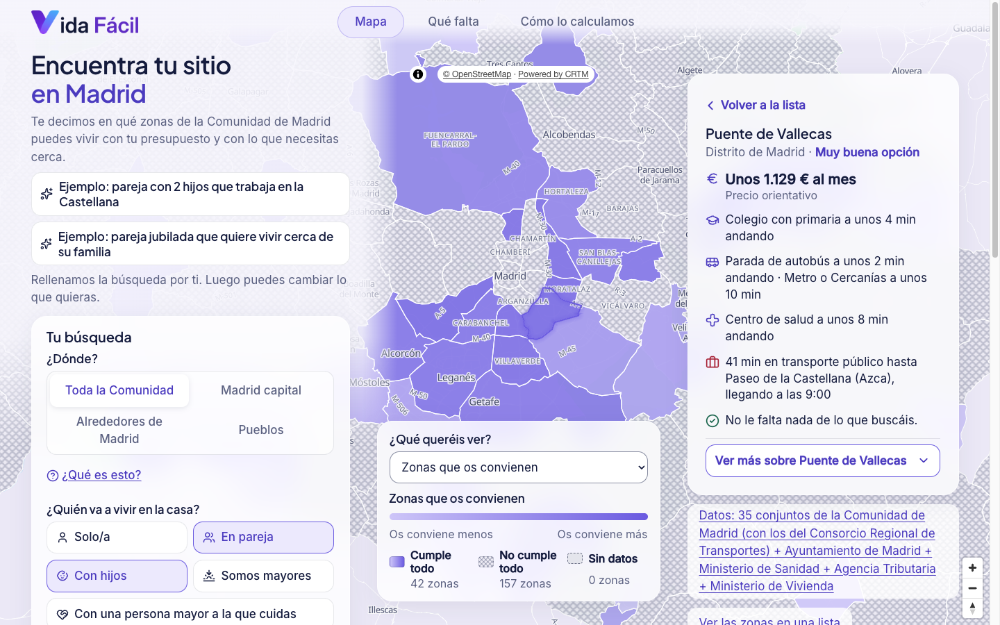

Vida Fácil.
Así se ve Vida Fácil


- 1Cuéntanos tu hogar, tu presupuesto y dónde trabajas
- 2Mira las zonas que te convienen y por qué
- 3Entra en una zona y mira qué le falta, con su fuente
Probada con 7 personas
Lo que pidieron, ya en la web: buscar por barrios y un límite de tiempo al trabajo. Y, para una persona mayor, más sencilla en el móvil.
Demo en vivo: {{DEMO_HOST}}
4 / 4